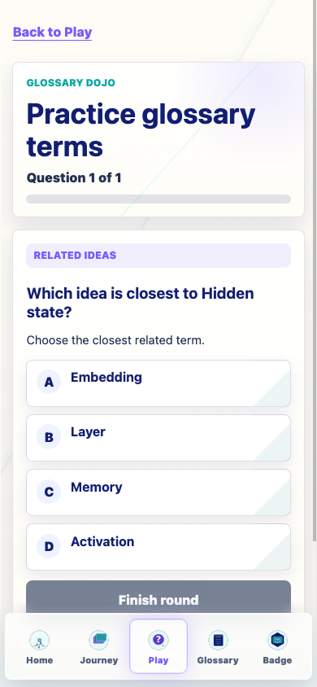

Removed stale neighbor/neighborhood wording from learner-facing Glossary Dojo UI, including a render-time guard for old saved localStorage rounds.
term_to_definition and definition_to_term during this purge pass.closest_concept remains enabled for explicit clean specs, stored clean specs, and deterministic QA, with prompt Which idea is closest to [TERM]?.v0.25.1.The purge covers the stale Dojo wording around learning-neighborhood/neighbor language, map-the-term language, term/meaning labels, and old definition-question wording. Historical docs may retain these as archival notes.
| Forced target | Hidden state |
|---|---|
| Expected prompt | Which idea is closest to Hidden state? |
| Expected helper | Choose the closest related term. |
| Displayed options | Embedding, Layer, Memory, Activation |
| Result | Passed. No stale wording appeared, choices were terms only, and there was no horizontal overflow at 390px. |
learning neighborhood: 0 hits.neighbor of: 0 hits.Both builds still emit the existing Vite large-chunk warning.
For GitHub Pages or iPhone Safari testing, use a cache-busting URL such as ?v=0251 or clear site data if an older bundle appears.
